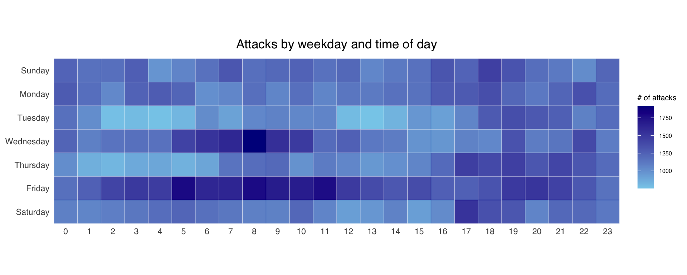
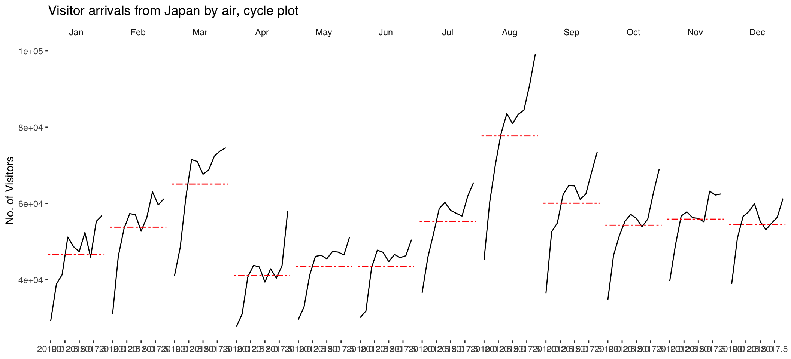
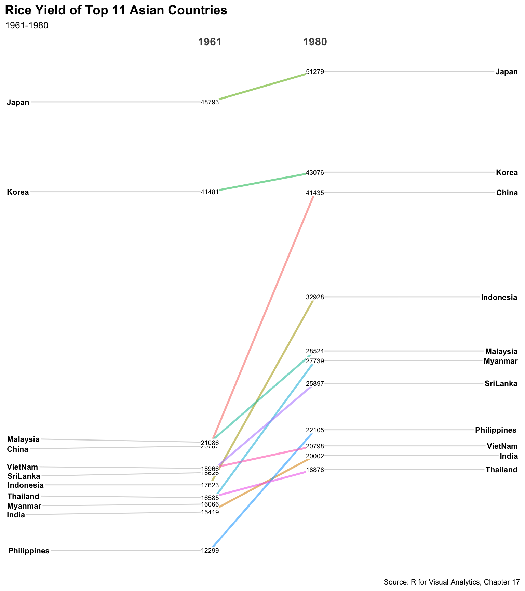

Code
if (!require(pacman)) install.packages("pacman")
pacman::p_load(
data.table, scales, viridis, lubridate, ggthemes,
gridExtra, readxl, knitr, CGPfunctions, tidyverse
)Visualising and Analysing Time-oriented Data
Jedidiah Asaf T
This hands-on exercise recreates the key techniques from Chapter 17 of R for Visual Analytics. It covers three time-oriented visualisation methods: a calendar heatmap of cyber-attack activity, a cycle plot of visitor arrivals, and a slopegraph of rice yields.
attacks <- read_csv("data/eventlog.csv")
make_hr_wkday <- function(ts, sc, tz) {
real_times <- ymd_hms(ts, tz = tz[1], quiet = TRUE)
dt <- data.table(
source_country = sc,
wkday = weekdays(real_times),
hour = hour(real_times)
)
return(dt)
}
wkday_levels <- c("Saturday", "Friday", "Thursday",
"Wednesday", "Tuesday", "Monday", "Sunday")
attacks <- attacks %>%
group_by(tz) %>%
do(make_hr_wkday(.$timestamp, .$source_country, .$tz)) %>%
ungroup() %>%
mutate(
wkday = factor(wkday, levels = wkday_levels),
hour = factor(hour, levels = 0:23)
)grouped <- attacks %>%
count(wkday, hour) %>%
ungroup() %>%
na.omit()
ggplot(grouped, aes(x = hour, y = wkday, fill = n)) +
geom_tile(color = "white", linewidth = 0.1) +
theme_tufte(base_family = "Helvetica") +
coord_equal() +
scale_fill_gradient(name = "# of attacks", low = "sky blue", high = "dark blue") +
labs(x = NULL, y = NULL, title = "Attacks by weekday and time of day") +
theme(
axis.ticks = element_blank(),
plot.title = element_text(hjust = 0.5),
legend.title = element_text(size = 8),
legend.text = element_text(size = 6)
)
A cycle plot places each month’s yearly trend side by side, with a red mean line, so both the seasonal pattern and the year-on-year trend are visible at once.
air <- read_xlsx("data/arrivals_by_air.xlsx")
air$month <- factor(month(air$`Month-Year`),
levels = 1:12, labels = month.abb, ordered = TRUE)
air$year <- year(ymd(air$`Month-Year`))
Japan <- air %>%
select(Japan, month, year) %>%
filter(year >= 2010)
hline.data <- Japan %>%
group_by(month) %>%
summarise(avgvalue = mean(Japan), .groups = "drop")ggplot() +
geom_line(data = Japan, aes(x = year, y = Japan, group = month), colour = "black") +
geom_hline(aes(yintercept = avgvalue), data = hline.data,
linetype = 6, colour = "red", linewidth = 0.5) +
facet_grid(~ month) +
labs(
x = NULL, y = "No. of Visitors",
title = "Visitor arrivals from Japan by air, cycle plot"
) +
theme_tufte(base_family = "Helvetica")
A slopegraph compares two time points and highlights which series rose or fell between them.
rice <- read_csv("data/rice.csv", show_col_types = FALSE)
rice %>%
mutate(Year = factor(Year)) %>%
filter(Year %in% c(1961, 1980)) %>%
newggslopegraph(
Year, Yield, Country,
Title = "Rice Yield of Top 11 Asian Countries",
SubTitle = "1961-1980",
Caption = "Source: R for Visual Analytics, Chapter 17"
)
Converting 'Year' to an ordered factorWarning: `aes_()` was deprecated in ggplot2 3.0.0.
ℹ Please use tidy evaluation idioms with `aes()`
ℹ The deprecated feature was likely used in the CGPfunctions package.
Please report the issue at <https://github.com/ibecav/CGPfunctions/issues>.Warning: Using `size` aesthetic for lines was deprecated in ggplot2 3.4.0.
ℹ Please use `linewidth` instead.
ℹ The deprecated feature was likely used in the CGPfunctions package.
Please report the issue at <https://github.com/ibecav/CGPfunctions/issues>.Warning: `aes_string()` was deprecated in ggplot2 3.0.0.
ℹ Please use tidy evaluation idioms with `aes()`.
ℹ See also `vignette("ggplot2-in-packages")` for more information.
ℹ The deprecated feature was likely used in the CGPfunctions package.
Please report the issue at <https://github.com/ibecav/CGPfunctions/issues>.
In this exercise, I learned three complementary ways to look at time. A calendar heatmap exposes recurring daily/weekly rhythms - cyber-attacks cluster at particular hours and weekdays. A cycle plot separates the seasonal shape from the long-run trend by laying each month’s mini-timeline side by side against its mean. A slopegraph strips a change down to its essentials - two points and the direction of the line between them - making winners and losers obvious. The common thread is that each design deliberately reshapes time to answer a specific question.